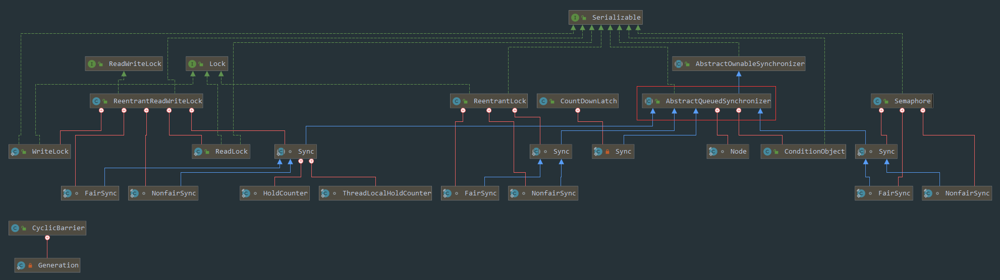
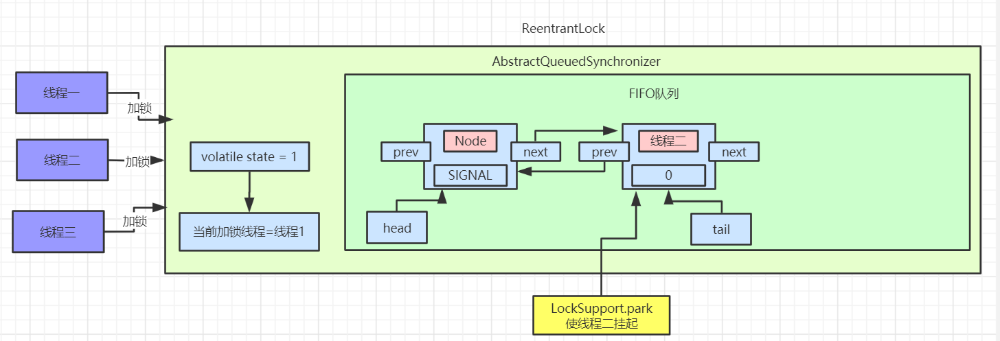
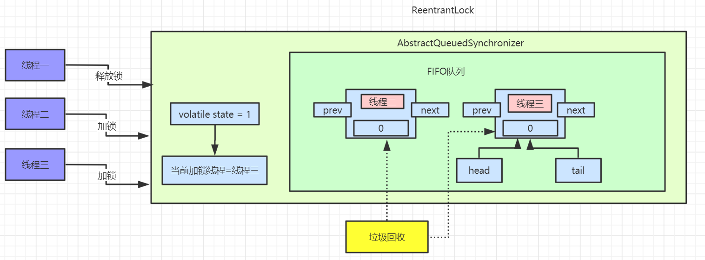
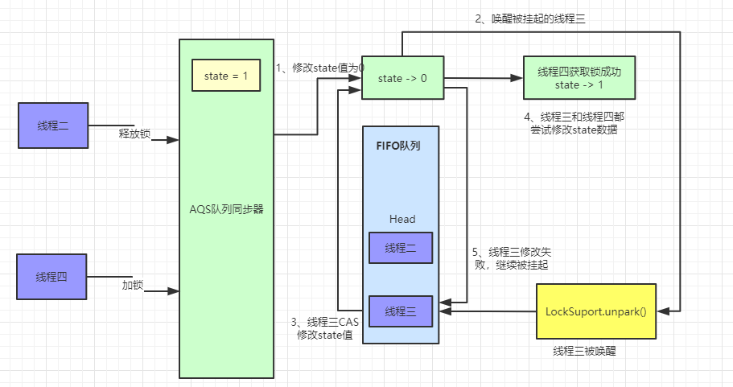
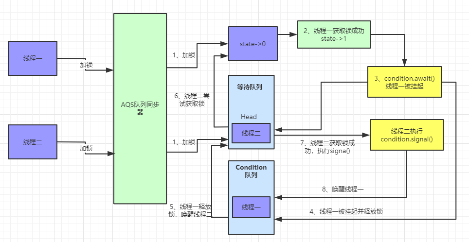
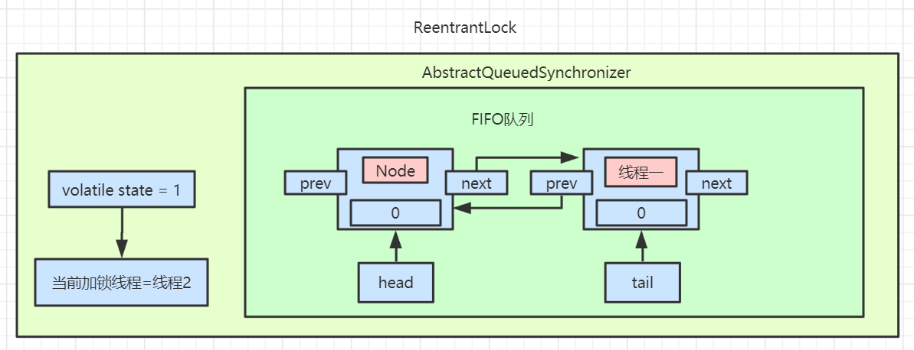

- AQS 万字图文全面解析.md
- Docker 镜像构建原理及源码分析.md
- ElasticSearch 小白从入门到精通.md
- JVM CPU Profiler技术原理及源码深度解析.md
- JVM 垃圾收集器.md
- JVM 面试的 30 个知识点.md
- Java IO 体系、线程模型大总结.md
- Java NIO浅析.md
- Java 面试题集锦（网络篇）.md
- Java-直接内存 DirectMemory 详解.md
- Java中9种常见的CMS GC问题分析与解决（上）.md
- Java中9种常见的CMS GC问题分析与解决（下）.md
- Java中的SPI.md
- Java中的ThreadLocal.md
- Java线程池实现原理及其在美团业务中的实践.md
- Java魔法类：Unsafe应用解析.md
- Kafka 源码阅读笔记.md
- Kafka、ActiveMQ、RabbitMQ、RocketMQ 区别以及高可用原理.md
- MySQL · 引擎特性 · InnoDB Buffer Pool.md
- MySQL · 引擎特性 · InnoDB IO子系统.md
- MySQL · 引擎特性 · InnoDB 事务系统.md
- MySQL · 引擎特性 · InnoDB 同步机制.md
- MySQL · 引擎特性 · InnoDB 数据页解析.md
- MySQL · 引擎特性 · InnoDB崩溃恢复.md
- MySQL · 引擎特性 · 临时表那些事儿.md
- MySQL 主从复制 半同步复制.md
- MySQL 主从复制 基于GTID复制.md
- MySQL 主从复制.md
- MySQL 事务日志(redo log和undo log).md
- MySQL 亿级别数据迁移实战代码分享.md
- MySQL 从一条数据说起-InnoDB行存储数据结构.md
- MySQL 地基基础：事务和锁的面纱.md
- MySQL 地基基础：数据字典.md
- MySQL 地基基础：数据库字符集.md
- MySQL 性能优化：碎片整理.md
- MySQL 故障诊断：一个 ALTER TALBE 执行了很久，你慌不慌？.md
- MySQL 故障诊断：如何在日志中轻松定位大事务.md
- MySQL 故障诊断：教你快速定位加锁的 SQL.md
- MySQL 日志详解.md
- MySQL 的半同步是什么？.md
- MySQL中的事务和MVCC.md
- MySQL事务_事务隔离级别详解.md
- MySQL优化：优化 select count().md
- MySQL共享锁、排他锁、悲观锁、乐观锁.md
- MySQL的MVCC（多版本并发控制）.md
- QingStor 对象存储架构设计及最佳实践.md
- RocketMQ 面试题集锦.md
- SnowFlake 雪花算法生成分布式 ID.md
- Spring Boot 2.x 结合 k8s 实现分布式微服务架构.md
- Spring Boot 教程：如何开发一个 starter.md
- Spring MVC 原理.md
- Spring MyBatis和Spring整合的奥秘.md
- Spring 帮助你更好的理解Spring循环依赖.md
- Spring 循环依赖及解决方式.md
- Spring中眼花缭乱的BeanDefinition.md
- Vert.x 基础入门.md
- eBay 的 Elasticsearch 性能调优实践.md
- 不可不说的Java“锁”事.md
- 互联网并发限流实战.md
- 从ReentrantLock的实现看AQS的原理及应用.md
- 从SpringCloud开始，聊微服务架构.md
- 全面了解 JDK 线程池实现原理.md
- 分布式一致性理论与算法.md
- 分布式一致性算法 Raft.md
- 分布式唯一 ID 解析.md
- 分布式链路追踪：集群管理设计.md
- 动态代理种类及原理，你知道多少？.md
- 响应式架构与 RxJava 在有赞零售的实践.md
- 大数据算法——布隆过滤器.md
- 如何优雅地记录操作日志？.md
- 如何设计一个亿级消息量的 IM 系统.md
- 异步网络模型.md
- 当我们在讨论CQRS时，我们在讨论些神马？.md
- 彻底理解 MySQL 的索引机制.md
- 最全的 116 道 Redis 面试题解答.md
- 有赞权限系统(SAM).md
- 有赞零售中台建设方法的探索与实践.md
- 服务注册与发现原理剖析（Eureka、Zookeeper、Nacos）.md
- 深入浅出Cache.md
- 深入理解 MySQL 底层实现.md
- 漫画讲解 git rebase VS git merge.md
- 生成浏览器唯一稳定 ID 的探索.md
- 缓存 如何保证缓存与数据库的双写一致性？.md
- 网易严选怎么做全链路监控的？.md
- 美团万亿级 KV 存储架构与实践.md
- 美团点评Kubernetes集群管理实践.md
- 美团百亿规模API网关服务Shepherd的设计与实现.md
- 解读《阿里巴巴 Java 开发手册》背后的思考.md
- 认识 MySQL 和 Redis 的数据一致性问题.md
- 进阶：Dockerfile 高阶使用指南及镜像优化.md
- 铁总在用的高性能分布式缓存计算框架 Geode.md
- 阿里云PolarDB及其共享存储PolarFS技术实现分析（上）.md
- 阿里云PolarDB及其共享存储PolarFS技术实现分析（下）.md
- 面试最常被问的 Java 后端题.md
- 领域驱动设计在互联网业务开发中的实践.md
- 领域驱动设计的菱形对称架构.md
- 高效构建 Docker 镜像的最佳实践.md
AQS 万字图文全面解析
前言
谈到并发，我们不得不说AQS(AbstractQueuedSynchronizer)，所谓的AQS即是抽象的队列式的同步器，内部定义了很多锁相关的方法，我们熟知的ReentrantLock、ReentrantReadWriteLock、CountDownLatch、Semaphore等都是基于AQS来实现的。
我们先看下AQS相关的UML图：

思维导图：
AQS 实现原理
AQS中 维护了一个volatile int state（代表共享资源）和一个FIFO线程等待队列（多线程争用资源被阻塞时会进入此队列）。
这里volatile能够保证多线程下的可见性，当state=1则代表当前对象锁已经被占有，其他线程来加锁时则会失败，加锁失败的线程会被放入一个FIFO的等待队列中，比列会被UNSAFE.park()操作挂起，等待其他获取锁的线程释放锁才能够被唤醒。
另外state的操作都是通过CAS来保证其并发修改的安全性。
具体原理我们可以用一张图来简单概括：

AQS 中提供了很多关于锁的实现方法，
- getState()：获取锁的标志 state 值
- setState()：设置锁的标志 state 值
- tryAcquire(int)：独占方式获取锁。尝试获取资源，成功则返回 true，失败则返回 false。
- tryRelease(int)：独占方式释放锁。尝试释放资源，成功则返回 true，失败则返回 false。
这里还有一些方法并没有列出来，接下来我们以ReentrantLock作为突破点通过源码和画图的形式一步步了解AQS内部实现原理。
目录结构
文章准备模拟多线程竞争锁、释放锁的场景来进行分析AQS源码：
三个线程(线程一、线程二、线程三)同时来加锁/释放锁
目录如下：
- 线程一加锁成功时
AQS内部实现 - 线程二/三加锁失败时
AQS中等待队列的数据模型 - 线程一释放锁及线程二获取锁实现原理
- 通过线程场景来讲解公平锁具体实现原理
- 通过线程场景来讲解 Condition 中 a
wait()和signal()实现原理
这里会通过画图来分析每个线程加锁、释放锁后AQS内部的数据结构和实现原理
场景分析
线程一加锁成功
如果同时有三个线程并发抢占锁，此时线程一抢占锁成功，线程二和线程三抢占锁失败，具体执行流程如下：

此时AQS内部数据为：

线程二、线程三加锁失败：

有图可以看出，等待队列中的节点Node是一个双向链表，这里SIGNAL是Node中waitStatus属性，Node中还有一个nextWaiter属性，这个并未在图中画出来，这个到后面Condition会具体讲解的。
具体看下抢占锁代码实现：
java.util.concurrent.locks.ReentrantLock .NonfairSync:
static final class NonfairSync extends Sync {
final void lock() {
if (compareAndSetState(0, 1))
setExclusiveOwnerThread(Thread.currentThread());
else
acquire(1);
}
protected final boolean tryAcquire(int acquires) {
return nonfairTryAcquire(acquires);
}
}
这里使用的ReentrantLock 非公平锁，线程进来直接利用CAS尝试抢占锁，如果抢占成功state值回被改为 1，且设置对象独占锁线程为当前线程。如下所示：
protected final boolean compareAndSetState(int expect, int update) {
return unsafe.compareAndSwapInt(this, stateOffset, expect, update);
}
protected final void setExclusiveOwnerThread(Thread thread) {
exclusiveOwnerThread = thread;
}
线程二抢占锁失败
我们按照真实场景来分析，线程一抢占锁成功后，state变为 1，线程二通过CAS修改state变量必然会失败。此时AQS中FIFO(First In First Out 先进先出)队列中数据如图所示：

我们将线程二执行的逻辑一步步拆解来看：
java.util.concurrent.locks.AbstractQueuedSynchronizer.acquire():
public final void acquire(int arg) {
if (!tryAcquire(arg) &&
acquireQueued(addWaiter(Node.EXCLUSIVE), arg))
selfInterrupt();
}
先看看tryAcquire()的具体实现： java.util.concurrent.locks.ReentrantLock .nonfairTryAcquire():
final boolean nonfairTryAcquire(int acquires) {
final Thread current = Thread.currentThread();
int c = getState();
if (c == 0) {
if (compareAndSetState(0, acquires)) {
setExclusiveOwnerThread(current);
return true;
}
}
else if (current == getExclusiveOwnerThread()) {
int nextc = c + acquires;
if (nextc < 0)
throw new Error("Maximum lock count exceeded");
setState(nextc);
return true;
}
return false;
}
nonfairTryAcquire()方法中首先会获取state的值，如果不为 0 则说明当前对象的锁已经被其他线程所占有，接着判断占有锁的线程是否为当前线程，如果是则累加state值，这就是可重入锁的具体实现，累加state值，释放锁的时候也要依次递减state值。
如果state为 0，则执行CAS操作，尝试更新state值为 1，如果更新成功则代表当前线程加锁成功。
以线程二为例，因为线程一已经将state修改为 1，所以线程二通过CAS修改state的值不会成功。加锁失败。
线程二执行tryAcquire()后会返回 false，接着执行addWaiter(Node.EXCLUSIVE)逻辑，将自己加入到一个FIFO等待队列中，代码实现如下：
java.util.concurrent.locks.AbstractQueuedSynchronizer.addWaiter():
private Node addWaiter(Node mode) {
Node node = new Node(Thread.currentThread(), mode);
Node pred = tail;
if (pred != null) {
node.prev = pred;
if (compareAndSetTail(pred, node)) {
pred.next = node;
return node;
}
}
enq(node);
return node;
}
这段代码首先会创建一个和当前线程绑定的Node节点，Node为双向链表。此时等待对内中的tail指针为空，直接调用enq(node)方法将当前线程加入等待队列尾部：
private Node enq(final Node node) {
for (;;) {
Node t = tail;
if (t == null) {
if (compareAndSetHead(new Node()))
tail = head;
} else {
node.prev = t;
if (compareAndSetTail(t, node)) {
t.next = node;
return t;
}
}
}
}
第一遍循环时tail指针为空，进入 if 逻辑，使用CAS操作设置head指针，将head指向一个新创建的Node节点。此时AQS中数据：

执行完成之后，head、tail、t都指向第一个Node元素。
接着执行第二遍循环，进入else逻辑，此时已经有了head节点，这里要操作的就是将线程二对应的Node节点挂到head节点后面。此时队列中就有了两个Node节点：

addWaiter()方法执行完后，会返回当前线程创建的节点信息。继续往后执行acquireQueued(addWaiter(Node.EXCLUSIVE), arg) 逻辑，此时传入的参数为线程二对应的Node节点信息：
java.util.concurrent.locks.AbstractQueuedSynchronizer.acquireQueued():
final boolean acquireQueued(final Node node, int arg) {
boolean failed = true;
try {
boolean interrupted = false;
for (;;) {
final Node p = node.predecessor();
if (p == head && tryAcquire(arg)) {
setHead(node);
p.next = null; // help GC
failed = false;
return interrupted;
}
if (shouldParkAfterFailedAcquire(p, node) &&
parkAndChecknIterrupt())
interrupted = true;
}
} finally {
if (failed)
cancelAcquire(node);
}
}
private static boolean shouldParkAfterFailedAcquire(Node pred, Node node) {
int ws = pred.waitStatus;
if (ws == Node.SIGNAL)
return true;
if (ws > 0) {
do {
node.prev = pred = pred.prev;
} while (pred.waitStatus > 0);
pred.next = node;
} else {
compareAndSetWaitStatus(pred, ws, Node.SIGNAL);
}
return false;
}
private final boolean parkAndCheckInterrupt() {
LockSupport.park(this);
return Thread.interrupted();
}
acquireQueued()这个方法会先判断当前传入的Node对应的前置节点是否为head，如果是则尝试加锁。加锁成功过则将当前节点设置为head节点，然后空置之前的head节点，方便后续被垃圾回收掉。
如果加锁失败或者Node的前置节点不是head节点，就会通过shouldParkAfterFailedAcquire方法 将head节点的waitStatus变为了SIGNAL=-1，最后执行parkAndChecknIterrupt方法，调用LockSupport.park()挂起当前线程。
此时AQS中的数据如下图：

此时线程二就静静的待在AQS的等待队列里面了，等着其他线程释放锁来唤醒它。
线程三抢占锁失败
看完了线程二抢占锁失败的分析，那么再来分析线程三抢占锁失败就很简单了，先看看addWaiter(Node mode)方法：
private Node addWaiter(Node mode) {
Node node = new Node(Thread.currentThread(), mode);
Node pred = tail;
if (pred != null) {
node.prev = pred;
if (compareAndSetTail(pred, node)) {
pred.next = node;
return node;
}
}
enq(node);
return node;
}
此时等待队列的tail节点指向线程二，进入if逻辑后，通过CAS指令将tail节点重新指向线程三。接着线程三调用enq()方法执行入队操作，和上面线程二执行方式是一致的，入队后会修改线程二对应的Node中的waitStatus=SIGNAL。最后线程三也会被挂起。此时等待队列的数据如图：
线程一释放锁
现在来分析下释放锁的过程，首先是线程一释放锁，释放锁后会唤醒head节点的后置节点，也就是我们现在的线程二，具体操作流程如下：

执行完后等待队列数据如下：

此时线程二已经被唤醒，继续尝试获取锁，如果获取锁失败，则会继续被挂起。如果获取锁成功，则AQS中数据如图：

接着还是一步步拆解来看，先看看线程一释放锁的代码：
java.util.concurrent.locks.AbstractQueuedSynchronizer.release()
public final boolean release(int arg) {
if (tryRelease(arg)) {
Node h = head;
if (h != null && h.waitStatus != 0)
unparkSuccessor(h);
return true;
}
return false;
}
这里首先会执行tryRelease()方法，这个方法具体实现在ReentrantLock中，如果tryRelease执行成功，则继续判断head节点的waitStatus是否为 0，前面我们已经看到过，head的waitStatue为SIGNAL(-1)，这里就会执行unparkSuccessor()方法来唤醒head的后置节点，也就是我们上面图中线程二对应的Node节点。
此时看ReentrantLock.tryRelease()中的具体实现：
protected final boolean tryRelease(int releases) {
int c = getState() - releases;
if (Thread.currentThread() != getExclusiveOwnerThread())
throw new IllegalMonitorStateException();
boolean free = false;
if (c == 0) {
free = true;
setExclusiveOwnerThread(null);
}
setState(c);
return free;
}
执行完ReentrantLock.tryRelease()后，state被设置成 0，Lock 对象的独占锁被设置为 null。此时看下AQS中的数据：

接着执行java.util.concurrent.locks.AbstractQueuedSynchronizer.unparkSuccessor()方法，唤醒head的后置节点：
private void unparkSuccessor(Node node) {
int ws = node.waitStatus;
if (ws < 0)
compareAndSetWaitStatus(node, ws, 0);
Node s = node.next;
if (s == null || s.waitStatus > 0) {
s = null;
for (Node t = tail; t != null && t != node; t = t.prev)
if (t.waitStatus <= 0)
s = t;
}
if (s != null)
LockSupport.unpark(s.thread);
}
这里主要是将head节点的waitStatus设置为 0。
此时重新将head指针指向线程二对应的Node节点，且使用LockSupport.unpark方法来唤醒线程二。
被唤醒的线程二会接着尝试获取锁，用CAS指令修改state数据。 执行完成后可以查看AQS中数据：

此时线程二被唤醒，线程二接着之前被park的地方继续执行，继续执行acquireQueued()方法。
线程二唤醒继续加锁
final boolean acquireQueued(final Node node, int arg) {
boolean failed = true;
try {
boolean interrupted = false;
for (;;) {
final Node p = node.predecessor();
if (p == head && tryAcquire(arg)) {
setHead(node);
p.next = null; // help GC
failed = false;
return interrupted;
}
if (shouldParkAfterFailedAcquire(p, node) &&
parkAndCheckInterrupt())
interrupted = true;
}
} finally {
if (failed)
cancelAcquire(node);
}
}
此时线程二被唤醒，继续执行for循环，判断线程二的前置节点是否为head，如果是则继续使用tryAcquire()方法来尝试获取锁，其实就是使用CAS操作来修改state值，如果修改成功则代表获取锁成功。接着将线程二设置为head节点，然后空置之前的head节点数据，被空置的节点数据等着被垃圾回收。
此时线程二获取锁成功，AQS中队列数据如下：

等待队列中的数据都等待着被垃圾回收。
线程二释放锁/线程三加锁
当线程二释放锁时，会唤醒被挂起的线程三，流程和上面大致相同，被唤醒的线程三会再次尝试加锁，具体代码可以参考上面内容。具体流程图如下：
此时AQS中队列数据如图：

公平锁实现原理
上面所有的加锁场景都是基于非公平锁来实现的，非公平锁是ReentrantLock的默认实现，那我们接着来看一下公平锁的实现原理，这里先用一张图来解释公平锁和非公平锁的区别：
非公平锁执行流程：

这里我们还是用之前的线程模型来举例子，当线程二释放锁的时候，唤醒被挂起的线程三，线程三执行tryAcquire()方法使用CAS操作来尝试修改state值，如果此时又来了一个线程四也来执行加锁操作，同样会执行tryAcquire()方法。
这种情况就会出现竞争，线程四如果获取锁成功，线程三仍然需要待在等待队列中被挂起。这就是所谓的非公平锁，线程三辛辛苦苦排队等到自己获取锁，却眼巴巴的看到线程四插队获取到了锁。
公平锁执行流程：

公平锁在加锁的时候，会先判断AQS等待队列中是存在节点，如果存在节点则会直接入队等待，具体代码如下.
公平锁在获取锁是也是首先会执行acquire()方法，只不过公平锁单独实现了tryAcquire()方法：
#java.util.concurrent.locks.AbstractQueuedSynchronizer.acquire():
public final void acquire(int arg) {
if (!tryAcquire(arg) &&
acquireQueued(addWaiter(Node.EXCLUSIVE), arg))
selfInterrupt();
}
这里会执行ReentrantLock中公平锁的tryAcquire()方法
#java.util.concurrent.locks.ReentrantLock.FairSync.tryAcquire():
static final class FairSync extends Sync {
protected final boolean tryAcquire(int acquires) {
final Thread current = Thread.currentThread();
int c = getState();
if (c == 0) {
if (!hasQueuedPredecessors() &&
compareAndSetState(0, acquires)) {
setExclusiveOwnerThread(current);
return true;
}
}
else if (current == getExclusiveOwnerThread()) {
int nextc = c + acquires;
if (nextc < 0)
throw new Error("Maximum lock count exceeded");
setState(nextc);
return true;
}
return false;
}
}
这里会先判断state值，如果不为 0 且获取锁的线程不是当前线程，直接返回 false 代表获取锁失败，被加入等待队列。如果是当前线程则可重入获取锁。
如果state=0则代表此时没有线程持有锁，执行hasQueuedPredecessors()判断AQS等待队列中是否有元素存在，如果存在其他等待线程，那么自己也会加入到等待队列尾部，做到真正的先来后到，有序加锁。具体代码如下：
#java.util.concurrent.locks.AbstractQueuedSynchronizer.hasQueuedPredecessors():
public final boolean hasQueuedPredecessors() {
Node t = tail;
Node h = head;
Node s;
return h != t &&
((s = h.next) == null || s.thread != Thread.currentThread());
}
这段代码很有意思，返回false代表队列中没有节点或者仅有一个节点是当前线程创建的节点。返回true则代表队列中存在等待节点，当前线程需要入队等待。
先判断head是否等于tail，如果队列中只有一个Node节点，那么head会等于tail。
接着判断(s = h.next) == null，这种属于一种极端情况，在enq()入队操作中，此时不是原子性操作，可能存在这种情况：

在第一个红框处，例如 线程一 执行完成，此时 head 已经有值，而还未执行tail=head的时候，此时 线程二 判断 head != tail成立。而接着 线程一 执行完第二个红框处，此时tail = node，但是并未将head.next指向node。而这时 线程二 就会得到head.next == null成立，直接返回 true。这种情况代表有节点正在做入队操作。
如果head.next不为空，那么接着判断head.next节点是否为当前线程，如果不是则返回 false。大家要记清楚，返回 false 代表 FIFO 队列中没有等待获取锁的节点，此时线程可以直接尝试获取锁，如果返回 true 代表有等待线程，当前线程如要入队排列，这就是体现公平锁的地方。
非公平锁和公平锁的区别： 非公平锁性能高于公平锁性能。非公平锁可以减少CPU唤醒线程的开销，整体的吞吐效率会高点，CPU也不必取唤醒所有线程，会减少唤起线程的数量
非公平锁性能虽然优于公平锁，但是会存在导致线程饥饿的情况。在最坏的情况下，可能存在某个线程一直获取不到锁。不过相比性能而言，饥饿问题可以暂时忽略，这可能就是ReentrantLock默认创建非公平锁的原因之一了。
Condition 实现原理
Condition 简介
上面已经介绍了AQS所提供的核心功能，当然它还有很多其他的特性，这里我们来继续说下Condition这个组件。
Condition`是在`java 1.5`中才出现的，它用来替代传统的`Object`的`wait()`、`notify()`实现线程间的协作，相比使用`Object`的`wait()`、`notify()`，使用`Condition`中的`await()`、`signal()`这种方式实现线程间协作更加安全和高效。因此通常来说比较推荐使用`Condition
其中AbstractQueueSynchronizer中实现了Condition中的方法，主要对外提供awaite(Object.wait())和signal(Object.notify())调用。
Condition Demo 示例
使用示例代码：
/**
* ReentrantLock 实现源码学习
* @author 一枝花算不算浪漫
* @date 2020/4/28 7:20
*/
public class ReentrantLockDemo {
static ReentrantLock lock = new ReentrantLock();
public static void main(String[] args) {
Condition condition = lock.newCondition();
new Thread(() -> {
lock.lock();
try {
System.out.println("线程一加锁成功");
System.out.println("线程一执行 await 被挂起");
condition.await();
System.out.println("线程一被唤醒成功");
} catch (Exception e) {
e.printStackTrace();
} finally {
lock.unlock();
System.out.println("线程一释放锁成功");
}
}).start();
new Thread(() -> {
lock.lock();
try {
System.out.println("线程二加锁成功");
condition.signal();
System.out.println("线程二唤醒线程一");
} finally {
lock.unlock();
System.out.println("线程二释放锁成功");
}
}).start();
}
}
执行结果如下图：

这里线程一先获取锁，然后使用await()方法挂起当前线程并释放锁，线程二获取锁后使用signal唤醒线程一。
Condition 实现原理图解
我们还是用上面的demo作为实例，执行的流程如下：

线程一执行await()方法：
先看下具体的代码实现，#java.util.concurrent.locks.AbstractQueuedSynchronizer.ConditionObject.await()：
public final void await() throws InterruptedException {
if (Thread.interrupted())
throw new InterruptedException();
Node node = addConditionWaiter();
int savedState = fullyRelease(node);
int interruptMode = 0;
while (!isOnSyncQueue(node)) {
LockSupport.park(this);
if ((interruptMode = checkInterruptWhileWaiting(node)) != 0)
break;
}
if (acquireQueued(node, savedState) && interruptMode != THROW_IE)
interruptMode = REINTERRUPT;
if (node.nextWaiter != null) // clean up if cancelled
unlinkCancelledWaiters();
if (interruptMode != 0)
reportInterruptAfterWait(interruptMode);
}
await()方法中首先调用addConditionWaiter()将当前线程加入到Condition队列中。
执行完后我们可以看下Condition队列中的数据：

具体实现代码为：
private Node addConditionWaiter() {
Node t = lastWaiter;
if (t != null && t.waitStatus != Node.CONDITION) {
unlinkCancelledWaiters();
t = lastWaiter;
}
Node node = new Node(Thread.currentThread(), Node.CONDITION);
if (t == null)
firstWaiter = node;
else
t.nextWaiter = node;
lastWaiter = node;
return node;
}
这里会用当前线程创建一个Node节点，waitStatus为CONDITION。接着会释放该节点的锁，调用之前解析过的release()方法，释放锁后此时会唤醒被挂起的线程二，线程二会继续尝试获取锁。
接着调用isOnSyncQueue()方法是判断当前的线程节点是不是在同步队列中，因为上一步已经释放了锁，也就是说此时可能有线程已经获取锁同时可能已经调用了singal()方法，如果已经唤醒，那么就不应该park了，而是退出while方法，从而继续争抢锁。
此时线程一被挂起，线程二获取锁成功。
具体流程如下图：
线程二执行signal()方法：
首先我们考虑下线程二已经获取到锁，此时AQS等待队列中已经没有了数据。
接着就来看看线程二唤醒线程一的具体执行流程：
public final void signal() {
if (!isHeldExclusively())
throw new IllegalMonitorStateException();
Node first = firstWaiter;
if (first != null)
doSignal(first);
}
先判断当前线程是否为获取锁的线程，如果不是则直接抛出异常。 接着调用doSignal()方法来唤醒线程。
private void doSignal(Node first) {
do {
if ( (firstWaiter = first.nextWaiter) == null)
lastWaiter = null;
first.nextWaiter = null;
} while (!transferForSignal(first) &&
(first = firstWaiter) != null);
}
final boolean transferForSignal(Node node) {
if (!compareAndSetWaitStatus(node, Node.CONDITION, 0))
return false;
Node p = enq(node);
int ws = p.waitStatus;
if (ws > 0 || !compareAndSetWaitStatus(p, ws, Node.SIGNAL))
LockSupport.unpark(node.thread);
return true;
}
/**
* Inserts node into queue, initializing if necessary. See picture above.
* @param node the node to insert
* @return node's predecessor
*/
private Node enq(final Node node) {
for (;;) {
Node t = tail;
if (t == null) { // Must initialize
if (compareAndSetHead(new Node()))
tail = head;
} else {
node.prev = t;
if (compareAndSetTail(t, node)) {
t.next = node;
return t;
}
}
}
}
这里先从transferForSignal()方法来看，通过上面的分析我们知道Condition队列中只有线程一创建的一个Node节点，且waitStatue为CONDITION，先通过CAS修改当前节点waitStatus为 0，然后执行enq()方法将当前线程加入到等待队列中，并返回当前线程的前置节点。
加入等待队列的代码在上面也已经分析过，此时等待队列中数据如下图：

接着开始通过CAS修改当前节点的前置节点waitStatus为SIGNAL，并且唤醒当前线程。此时AQS中等待队列数据为：

线程一被唤醒后，继续执行await()方法中的 while 循环。
public final void await() throws InterruptedException {
if (Thread.interrupted())
throw new InterruptedException();
Node node = addConditionWaiter();
int savedState = fullyRelease(node);
int interruptMode = 0;
while (!isOnSyncQueue(node)) {
LockSupport.park(this);
if ((interruptMode = checkInterruptWhileWaiting(node)) != 0)
break;
}
if (acquireQueued(node, savedState) && interruptMode != THROW_IE)
interruptMode = REINTERRUPT;
if (node.nextWaiter != null) // clean up if cancelled
unlinkCancelledWaiters();
if (interruptMode != 0)
reportInterruptAfterWait(interruptMode);
}
因为此时线程一的waitStatus已经被修改为 0，所以执行isOnSyncQueue()方法会返回false。跳出while循环。
接着执行acquireQueued()方法，这里之前也有讲过，尝试重新获取锁，如果获取锁失败继续会被挂起。直到另外线程释放锁才被唤醒。
final boolean acquireQueued(final Node node, int arg) {
boolean failed = true;
try {
boolean interrupted = false;
for (;;) {
final Node p = node.predecessor();
if (p == head && tryAcquire(arg)) {
setHead(node);
p.next = null; // help GC
failed = false;
return interrupted;
}
if (shouldParkAfterFailedAcquire(p, node) &&
parkAndCheckInterrupt())
interrupted = true;
}
} finally {
if (failed)
cancelAcquire(node);
}
}
此时线程一的流程都已经分析完了，等线程二释放锁后，线程一会继续重试获取锁，流程到此终结。
Condition 总结
我们总结下 Condition 和 wait/notify 的比较：
- Condition 可以精准的对多个不同条件进行控制，wait/notify 只能和 synchronized 关键字一起使用，并且只能唤醒一个或者全部的等待队列；
- Condition 需要使用 Lock 进行控制，使用的时候要注意 lock()后及时的 unlock()，Condition 有类似于 await 的机制，因此不会产生加锁方式而产生的死锁出现，同时底层实现的是 park/unpark 的机制，因此也不会产生先唤醒再挂起的死锁，一句话就是不会产生死锁，但是 wait/notify 会产生先唤醒再挂起的死锁。
总结
这里用了一步一图的方式结合三个线程依次加锁/释放锁来展示了ReentrantLock的实现方式和实现原理，而ReentrantLock底层就是基于AQS实现的，所以我们也对AQS有了深刻的理解。
另外还介绍了公平锁与非公平锁的实现原理，Condition的实现原理，基本上都是使用源码+绘图的讲解方式，尽量让大家更容易去理解。